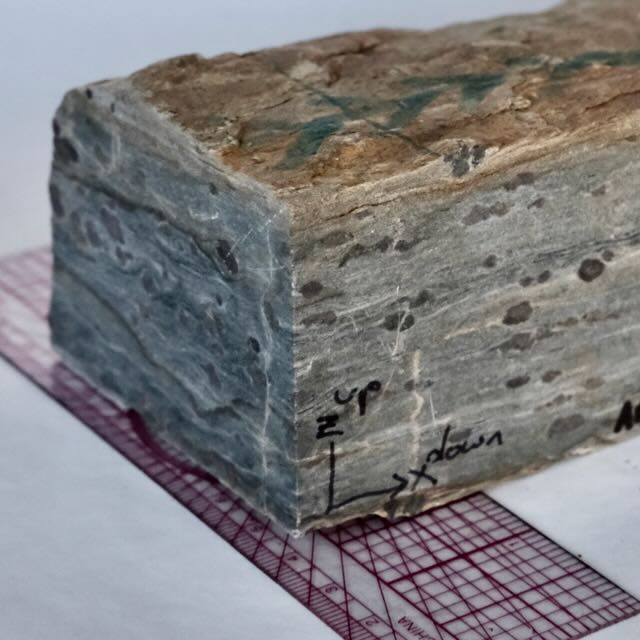
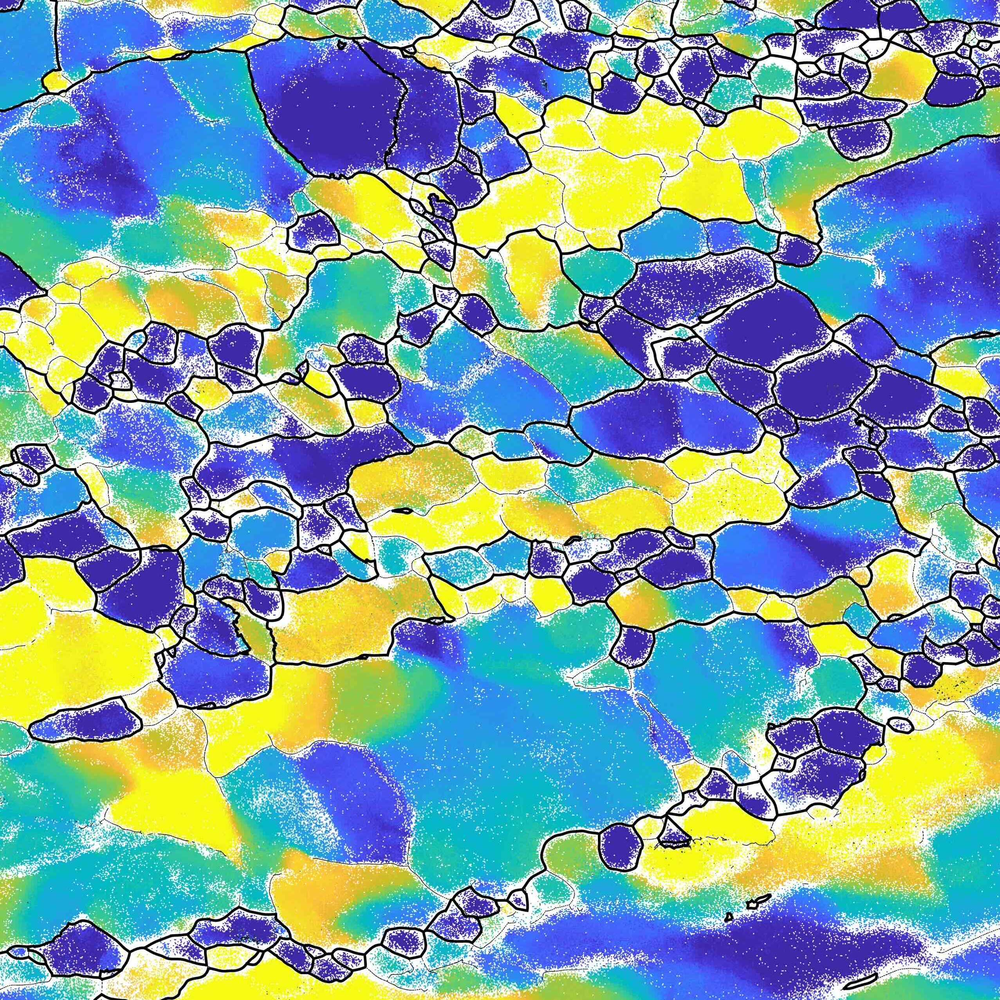
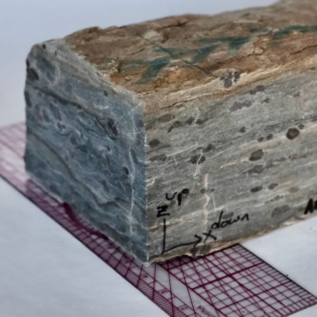
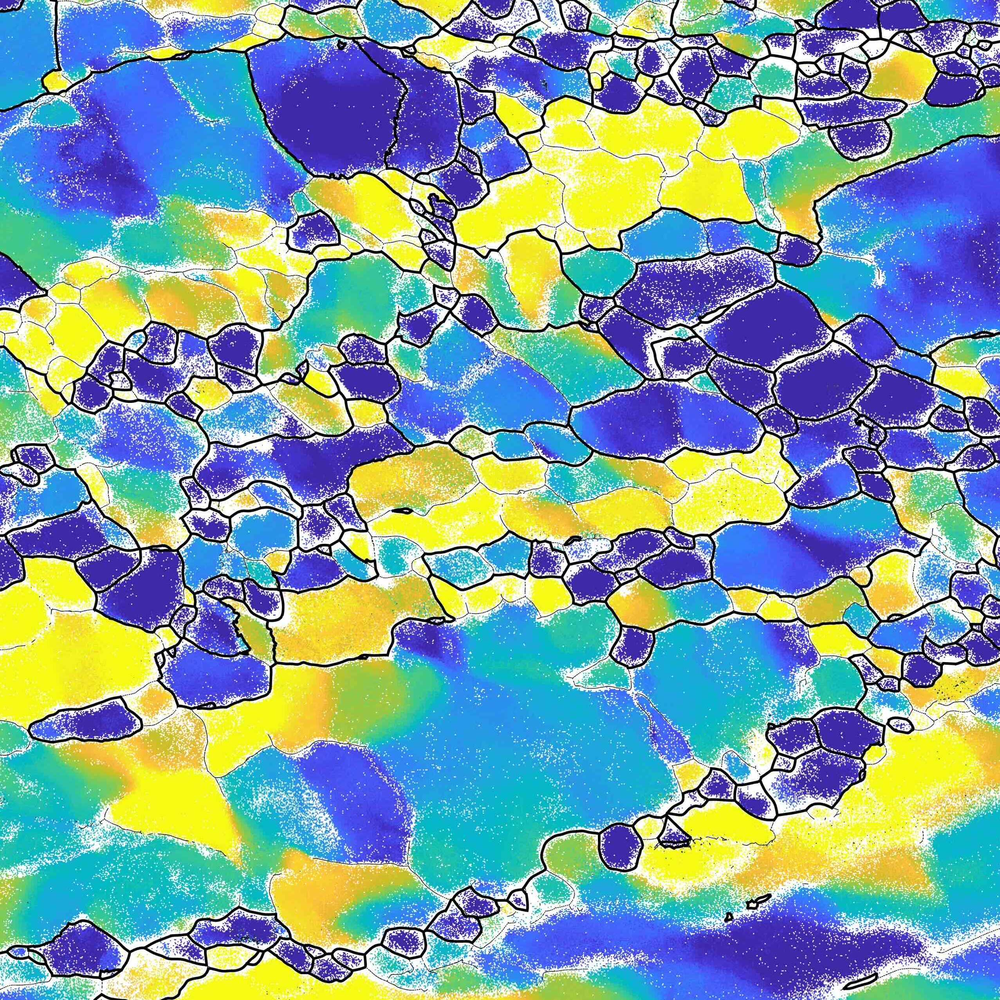
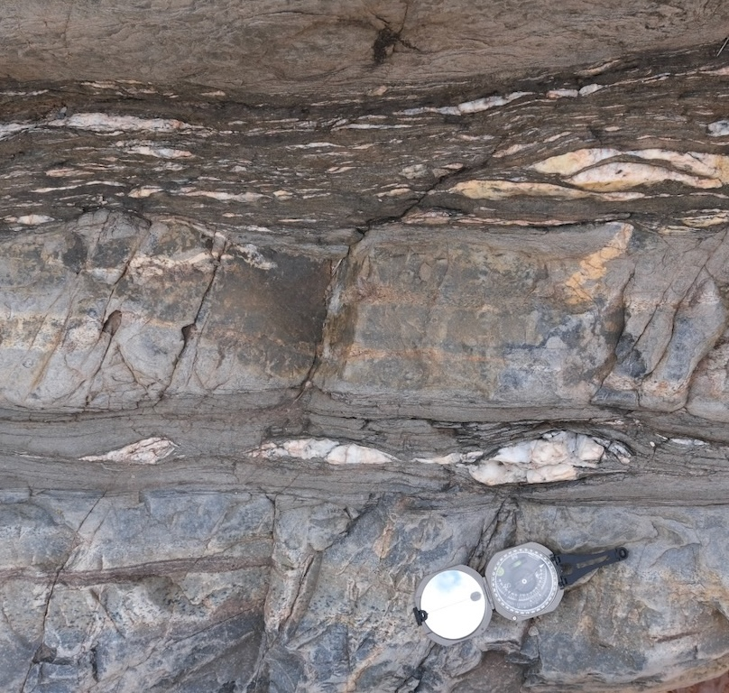
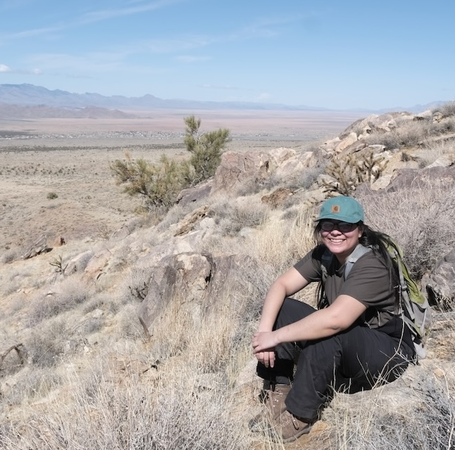
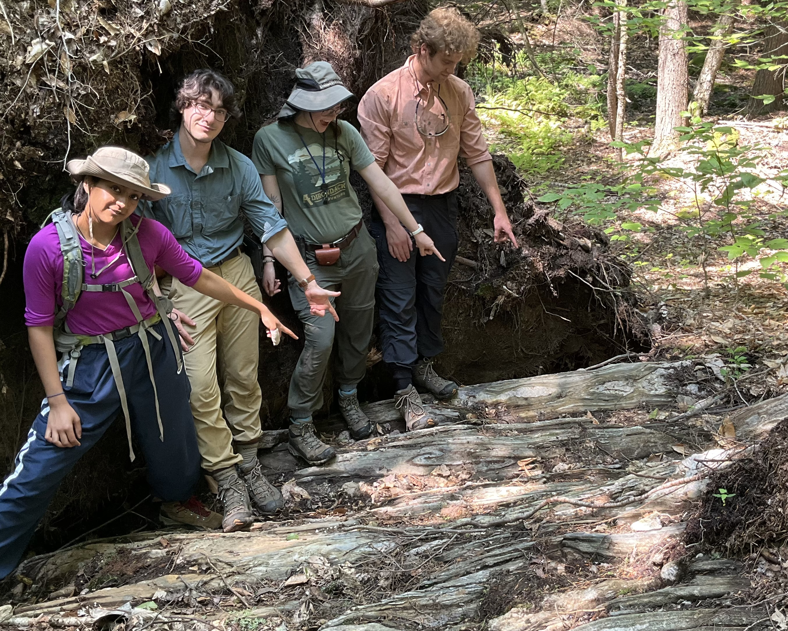

Structural Geology @ Hamilton College
 



Rheological Evolution of Continental Crust
I have broad interests in how continental crust accomodates deformation in different tectonic contexts, and specifically how deformation drives rheological change. My approach to stuying deformation processes integrates field mapping, statistics, microstructural analysis and quantitative laboratory techniques such as electron backscatter diffraction (EBSD) and anisotropy of magnetic susceptibility (AMS).
The Structure Lab at Hamilton College
The major piece of instrumentation in my lab is an AGICO KLYS Anisotropy of Magnetic Susceptibility Kappabridge with a 3D rotator and all the equipment necessary to process samples for AMS. AMS is an incredible approach to studying a wide variety of deformation- and magmatism-related processes. In my lab, I mostly use it to study granitic rocks that have been involved in deformation.
Strain Rate and Stress Evolution in Shear Zones
 Natural shear zones commonly undergo significant rheological change throughout their evolution. I am interested in how strain geometry and existing rheological boundaries can work in tandem with other geological processes (metamorphism, melting, deformation mechanisms) to drive transient behavior in shear zone systems.
My approach to this work mostly involves nitty-gritty microstructural analysis, including strain analysis, EBSD-derived crystallographic fabric analysis, and quartz paleopiezometry. Students get to collect shear zone samples, examine them under the light microscope, do phase identification using EDS, and collect EBSD data and perform analyses using the MTEX package for MATLAB.
Archean Tectonics


By what mechanisms were large structural domes emplaced into Earth's early crust? What is the relationship between plutonism, plate tectonics, crustal flow, and shear/fault localization during the subsequent deformation of continental crust? How did rocks partition strain from the field to the crystal lattice scales? These are among the questions that motivate my research in the Early Earth. My current research investigates a Paleoarchean granitic dome in Western Australia's Pilbara craton. The Mt Edgar dome is one of the archetypal Paleoarchean domes and has been pointed to as the strongest evidence for volumninous granitic diapirism in the early Earth. My structural work in the Pilbara tests this hypothesis by studying the internal structure of several granitic domes using anisotropy of magnetic susceptibility (AMS), detailed field and microstrctural observation around the sheared margin of the Mt Edgar dome, and statistical analysis of field measurements.
In the summer of 2023 I was joined in the field by two Geosciences majors from Hamilton College. The three of us spent several weeks mapping and collecting samples for AMS in the Mt Edgar and Shaw domes.
Shear Zone - Magma Interactions
In crustal scale shear zones, magmatism is commonly coeval with deformation. How does magmatic activity drive rheological change in the crust? Do shear zones help focus magmatism, or does magmatism localize shear zone deformation? These are among the questions I am asking in a project in south central Maine, where students and I have been examining a high temperature shear zone that is adjacent and structurally related to a gabbroic intrusion.
I took a team of four Hamilton students in 2024 to south central Maine to map fine scale features and collect samples for analysis.
Statistical Analysis
I have a deep interest in the statistical treatment of high-dimensional structural geology data (like foliation-lineation pairs, strain ellipsoids). The advent of methods and tools for analyzing structural geology data statistically nicely coincides with a trend towards larger datasets, especially as new databases like StraboSpot come online. I have pioneered workflows and am involved with developming to statistical techniques with collaborators.
The structural geology community is in the middle of an exciting shift towards using statistical techniques to get more out of complex datasets, and recently developed techniques and software tools are making it possible to treat high-dimensional data holistically. My goal is to use these new statistical and software tools to push the boundaries of how structural geologists use statistics, and to allow others to do the same by publishing my R scripts on this website.
Datascience for field geologists

An exciting new frontier for structural geology and other field-based geologic disciplines is the emergence of large, open-source databases for geologic data. I have long been involved in the StraboSpot digital data system, and continue to help drive this project forward, including testing field trips with experts to get feedback and input from the broader community.